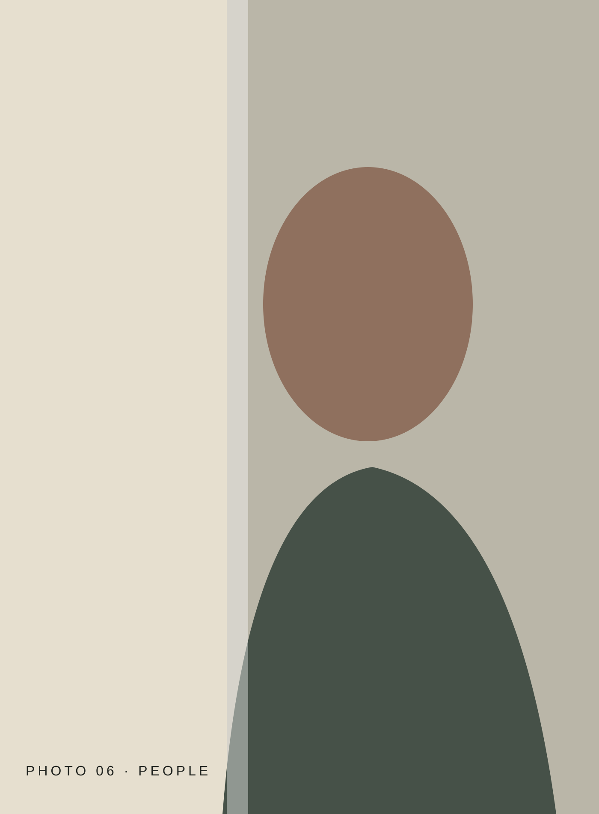
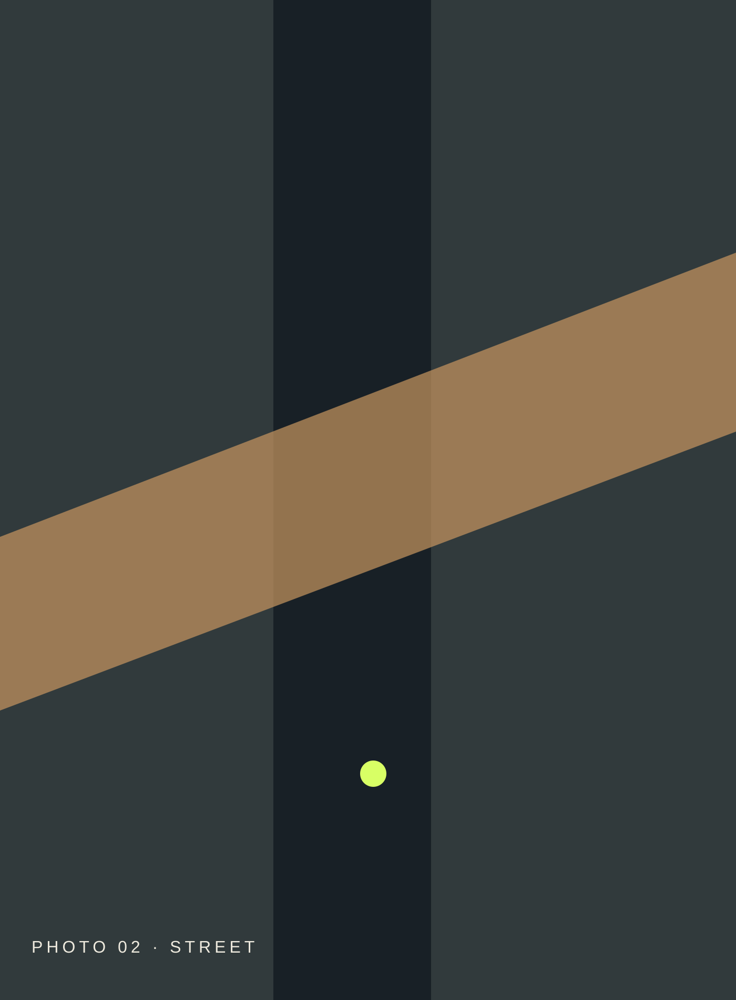

Soft Weather
Personal work · 2026
Portraits & presence
About the series
Portraits guided by available light and unguarded presence. Less about posing, more about the small expressions that reveal how someone inhabits a moment.



Image index
Each photograph carries its own title and place in the series. Select a frame to return to it in the carousel.